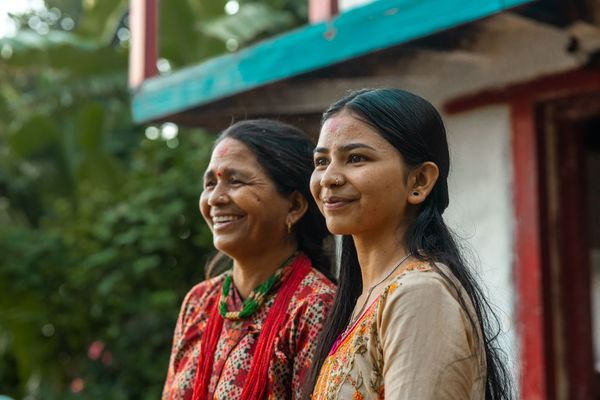

You’re not just joining a cause, you’re becoming the change you once hoped for.
We bring clean and safe drinking water to people in developing countries. Join us and make a difference!


Fuel a Future →
We bring clean and safe drinking water to people in developing countries. Join us and make a difference!